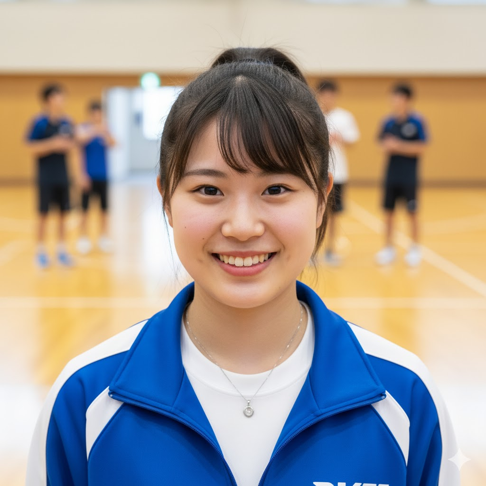
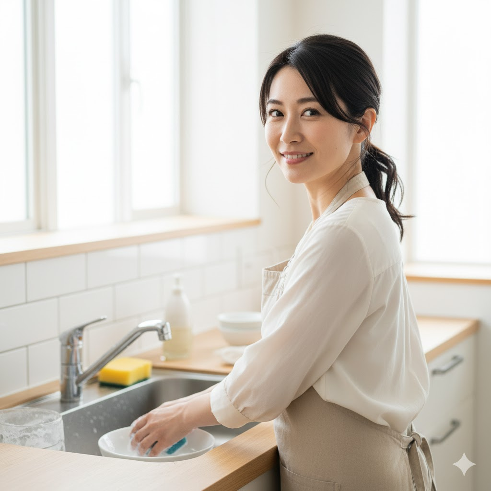
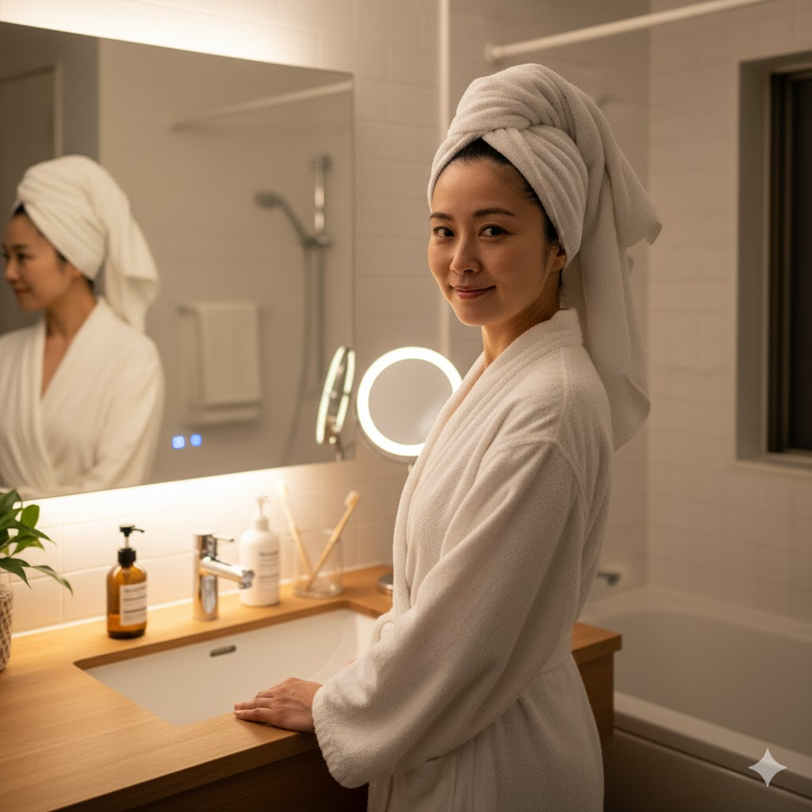

🕊 ナチュラル派・家族重視（ゆったり生活）
リンク

「コスパが良くて、家族みんなでバシャバシャ使っています。香りも爽やかで気に入りました！」
（30代 女性）
「大容量なので全身に使っています。オーガニックでこの価格は嬉しい。」
（20代 学生）
⏱ 忙しい日常・時短ケア（ワーキングライフ）
リンク

「ヘチマ水ならではの自然な潤いが好きです。忙しい時もこれ一本で落ち着きます。」
（40代 会社員）
「余計なものが入っていないので、肌が疲れている時でも安心して使えます。」
（30代 主婦）
🏞 アクティブ・アウトドア（外出・運動が多い）
リンク
「キャンプの必需品です。嫌な匂いもしないし、子どもにも安心して使えます。」
（30代 ママ）
「持ち運びに便利なサイズで、外出先でもサッとリフレッシュできます。」
（20代 男性）
🌙 夜型・不規則生活（夜勤／睡眠不足）
夜は一日の疲れを癒し、肌を集中ケアする絶好の時間です。メイクや皮脂汚れをしっかり落とした後、肌が最も吸収しやすいタイミングに美容液やクリームで栄養を届けることで、翌朝の肌の調子が大きく変わります。
リンク
「夜使うと翌朝の肌が全然違います。オイルフリーなのにしっかり潤うのが不思議。」
（50代 自営業）

「香りに癒やされます。ベタつかないので、寝る直前に使っても枕につきません。」
（40代 会社員）
朝と夜の役割を意識し、生活リズムに合ったアイテムを選びましょう。無理なく続けられるスキンケア習慣が身につきます。
毎日の小さな積み重ねが、長期的な美肌づくりにつながるのです。
生活スタイルに合ったスキンケアを取り入れることで、肌トラブルを防ぎつつ、心地よい毎日を過ごせます。朝晩の習慣、週末のスペシャルケアなど、自分に合ったリズムでケアを楽しむことが大切です。
家族と一緒に使えるアイテムや持ち運びしやすい商品を選ぶと、忙しい日常でも続けやすく、自然由来成分で肌にも優しいケアが可能です。
⬆ ページトップへ